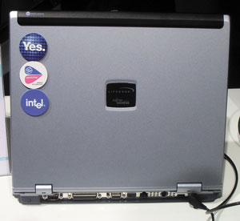
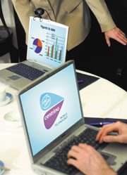
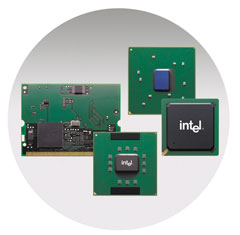
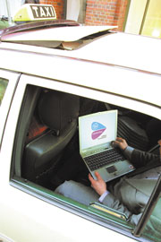

Петр Шитиков
Бизнес крупных компаний стал поистине глобальным, менеджеры верхнего и среднего звена проводят в поездках по нескольку месяцев в году, перемещаясь из города в город, из страны в страну. Интеграция вычислительной, коммуникационной и мобильной технологий стимулирует во всем мире спрос на беспроводные решения, позволяющие всегда оставаться на связи - в любое время и в любом месте. По мере распространения беспроводных технологий корпоративные клиенты и пользователи хотят получать решения, соответствующие их "мобильному" образу жизни. Им необходимы надежные беспроводные средства, повсеместный роуминг между различными сетями, услуги, зависящие от местонахождения, и самонастраивающиеся устройства с увеличенным временем автономной работы. Они хотят получать инновационные беспроводные устройства новых типов, достаточно производительные для поддержки голосовых интерфейсов; бесконечное множество обновляемых, насыщенных информацией сервисов, а также защищенный и повсеместный доступ к беспроводным сетям. Они ожидают появления совершенно новой продукции, благодаря которой можно будет воспользоваться преимуществами беспроводного доступа неизвестными ранее способами.
Беспроводные локальные сетиБеспроводные локальные сети (WLAN) обеспечивают пользователям высокую скорость соединения и свободу от кабелей, коммутируемого доступа и настольных ПК. В беспроводных сетях используются радиосигналы, посылаемые радиопередатчиками для приема и передачи Web-страниц, электронных писем и других данных на базе стандартов IEEE. В настоящее время наибольшее распространение получили два стандарта: IEEE 802.11a и IEEE 802.11b. Радиоустройства для работы в беспроводных сетях размещены внутри сетевых адаптеров беспроводного доступа. Существуют различные типы адаптеров для подключения к беспроводной сети: это адаптеры беспроводного доступа для установки в разъем PCI (используются в настольных ПК), сетевые адаптеры для установки в разъем PC card (используются в ноутбуках) и сетевые адаптеры для установки в разъем USB (внешние адаптеры для настольных или мобильных ПК). Компьютеры с беспроводным доступом могут напрямую связываться друг с другом при помощи беспроводного соединения; такой режим называется ad hoc. Но для подключения к беспроводной сети такой компьютер должен оказаться в пределах радиуса действия (обычно порядка сотни метров) хотя бы одной из точек доступа. Точка доступа выступает в роли концентратора беспроводной сети и может подсоединяться напрямую к кабельной сети. Она обеспечивает подключение ПК к Интернету, к кабельной сети или к другим соответствующим образом оборудованным компьютерам через беспроводную сеть. Беспроводные сети обладают той же функциональностью, что и кабельные: пользователи могут обмениваться файлами, путешествовать по Интернету, отправлять и получать электронную почту и т. д. Кроме того, пользователям предоставлена свобода перемещения в пределах покрытия их сети: в офисе, в местах, где установлены точки публичного беспроводного доступа ("хот-споты", Hot Spots). Любые пользователи беспроводных сетей могут подключаться к любым беспроводным сетям в пределах их покрытия, но им следует принять меры к обеспечению безопасности доступа, используя функции своего адаптера и точки доступа. Например, можно создать уникальный идентификатор SSID (Service Set Identifier), включить режим шифрования WEP (Wired Equivalent Privacy) и воспользоваться новейшим стандартом 802.1x, где улучшены механизмы обеспечения безопасности. Для дополнительной защиты рекомендуется пользоваться клиентским ПО для создания виртуальных частных сетей (VPN). Технология беспроводных сетей получает все более широкое распространение. Количество операторов, предоставляющих услуги беспроводного публичного доступа, растет с каждым днем; увеличивается и число самих точек беспроводного общественного доступа в Интернет. Не исключено, что в будущем роуминг для ПК будет таким же обыденным делом, как сегодня роуминг в сотовых сетях, а пользователи привыкнут к высокоскоростному доступу в Интернет, к возможности взаимодействовать с коллегами по работе при помощи технологий беспроводного доступа. |
Вектор мобильности
Рынок портативных компьютеров продолжает стремительно расти. Аналитики прогнозируют среднегодовой рост на 16% как минимум до 2006 г. Опросы пользователей самых разных категорий показывают, что люди с помощью мобильных ПК хотят иметь постоянный доступ в Интернет из любого места, будь то из дома или с работы. При этом им нужны мощные, но вместе с тем компактные ноутбуки с большим резервом автономного питания. Настоящая мобильность - это независимость от электрических розеток и проводного Интернета, небольшая масса и размеры, но вместе с тем высокая производительность. Для удовлетворения этих запросов и была разработана технология Intel Centrino для мобильных ПК.
Торговая марка "Технология Intel Centrino для мобильных ПК", последнее достижение корпорации в области мобильных вычислительных систем, впервые предоставляет пользователю интеграцию вычислительных и коммуникационных возможностей. Эта торговая марка - больше, чем просто процессор; она сочетает в себе ряд передовых технологий, а именно: процессор Pentium M, основанный на особой микроархитектуре; новые наборы микросхем семейства Intel 855 и интегрированное решение для беспроводного доступа Intel PRO/Wireless класса mini-PCI, а также соответствующее ПО. Все компоненты были разработаны специально для обеспечения истинной мобильности. При этом корпорация не только создала, но также оптимизировала и протестировала указанные компоненты. Надо отметить, что это первый случай в практике Intel, когда корпорация выпускает под одним именем целый комплекс технологий.
Технология Intel Centrino для мобильных ПК базируется на десятилетних разработках компании в области технологий для мобильных ПК. Для развития компьютерной мобильности была предложена программа "Четыре вектора мобильности", охватывающая следующие проблемы: интеграция средств беспроводного доступа, увеличение времени автономной работы от батарей, радикальное повышение производительности мобильного ПК и возможность создания более тонких и легких мобильных ПК. Понятие "мобильность" подразумевает, что все четыре вектора действуют одновременно. Intel пришла к выводу, что для реализации данных принципов необходим новый подход к проектированию. Чтобы оправдать надежды, возлагавшиеся на торговую марку "Технология Intel Centrino для мобильных ПК", корпорация оптимизировала и проверила целый комплекс мобильных технологий на предмет соответствия потребностям пользователей.
|  | Регалии современного ноутбука.
|
Для подключения к Интернету в любое время и в любом месте необходимы следующие условия: инфраструктура, аппаратные средства, открытые стандарты и безопасность. Подходящая инфраструктура включает в себя беспроводную локальную сеть WLAN, точки публичного доступа, сотовые сети стандарта GPRS/UTMS. Аппаратные средства обеспечения мобильности - это мобильный ПК, оборудование локальных беспроводных сетей, соответствующее стандартам семейства 802.11, мобильный телефон с поддержкой стандартов UMTS/GPRS или карманный ПК. Открытые стандарты должны дать пользователям возможность беспрепятственно переходить из одной сети в другую (имеются в виду беспроводные локальные сети, сети стандартов GSM/GPRS/UTMS и т. д.) и обеспечивать совместную работу аппаратных средств в соответствии со стандартами семейства 802.11. Продукция, соответствующая семейству стандартов 802.11, обеспечивает высокий уровень безопасности информации, основанный на WEP-шифровании. Помимо WEP, существуют другие технологии, которые можно применять для достижения дополнительных уровней безопасности: например, VPN (виртуальная частная сеть) или IPSec (IP-безопасность) совместно с WEP. Технология VPN предоставляет безопасные информационные "туннели", связывающие удаленного пользователя, выходящего в Интернет через шлюз точки публичного доступа, с корпоративной сетью. Используемые в VPN методы шифрования основаны на сложных алгоритмах и предотвращают несанкционированный доступ или злонамеренные попытки проникновения. IPSec предоставляет клиенту VPN возможности, встроенные в операционную систему Microsoft.
|  | Незаменим для бизнеса.
|
Intel активно участвует в создании инфраструктуры и развертывании точек беспроводного сетевого подключения, а также помогает в проведении программ, ориентированных на корпоративных пользователей. Сюда, в частности, входит знакомство с преимуществами технологии, определение мест возможного размещения точек беспроводного сетевого подключения, обучение порядку использования точек доступа и правилам поддержания безопасности, а также расчетам стоимости реализации и общего коэффициента окупаемости инвестиций. Фонд Intel Communications Fund планирует инвестировать 150 млн долл. в развитие семейства стандартов 802.11, а также в некоторые компании, занимающиеся беспроводными сетями. Начиная с 1999 г. Intel уже вложила более 25 млн долл. примерно в 10 компаний, занимающихся WLAN. Фонд будет также инвестировать в компании, создающие аппаратные средства и программное обеспечение, в том числе биллинговое, более устойчивую к отказам сетевую инфраструктуру и новые способы мобильного подключения к высокоскоростным сетям.
В настоящее время точки беспроводного публичного доступа к сетям WLAN (так называемые хот-споты - Hot Spots) появляются в таких общественных местах, как аэропорты, железнодорожные вокзалы, гостиницы, государственные учреждения, кафе, бары и даже парки. Intel разработала программу стандартной для всего мира маркировки точек беспроводного доступа, призванную помочь пользователям в поиске мест беспроводного подключения. Программа информирует пользователей о том, что сеть данного провайдера услуг прошла тестирование на совместимость с технологией Intel Centrino для мобильных ПК.
Технические подробности
Технология Intel Centrino - это решение корпорации для мобильных ПК, включающее новый "мобильный" процессор, наборы микросхем и средства подключения к беспроводным сетям стандарта 802.11, оптимизированные, протестированные и аттестованные для совместной работы. Помимо средств беспроводной связи, технология включает разработки, призванные увеличить время автономной работы, уменьшить толщину и массу ноутбуков и достичь высокого уровня производительности в мобильном режиме.
|  | Аппаратные компоненты Centrino.
|
Выступая на весеннем Форуме Intel для разработчиков в Сан-Хосе (Калифорния), вице-президент и генеральный менеджер подразделения Mobile Platform Group Ананд Чандрасехер сравнил по значимости появление технологии Centrino для мобильных ПК с изобретением пружинного часового механизма английским ученым Джорджем Грэхемом в 1721 г. Хотя изобретение Грэхема не было каким-то технологическим прорывом (точность хода часов и до того была достаточно высока, существовали и часы маленького размера), появилась возможность существенно повысить одновременно и точность часов, и их компактность и надежность. Сделанные Грэхемом улучшения имели далеко идущие последствия - например, в корабельной навигации, где упростились вычисления координат.
Глава "мобильного" подразделения Intel привел еще один интересный пример - плеер Walkman. Этот маленький магнитофон, "поселившийся" на поясах сотен миллионов молодых людей и по сути дела не несущий в себе никаких технологических революций, сделал музыку поистине мобильной. А теперь уже есть и CD-Walkman, недавно появился и Video-Walkman. Технология Intel Centrino делает то же самое для мобильных компьютеров: они становятся столь же необходимым спутником многих, как носовой платок или зажигалка.
Итак, вернемся к техническим деталям. Процессор Intel Pentium M основан на новой, оптимизированной для мобильных ПК микроархитектуре, которая отличается более высокой производительностью и уменьшенным энергопотреблением, позволяя увеличить время работы от батарей по сравнению со стандартными современными системами. Важнейшие особенности новой микроархитектуры - наслоение микроопераций для ускорения выполнения и снижения энергопотребления (Micro-Ops Fusion), усовершенствованная технология прогнозирования ветвления, позволяющая снизить общую величину задержки в системе (Advanced Branch Prediction), а также выделенный диспетчер стека, уменьшающий общее количество микроопераций (Dedicated Stack Manager).
Процессор производится с соблюдением проектных норм 0,13 мкм и содержит 77 млн транзисторов. Кристалл оснащен оптимизированной по энергопотреблению 400-МГц системной шиной, энергоэкономичной кэш-памятью 2-го уровня объемом 1 Мбайт с функцией отключения неиспользуемых блоков, а также специальными функциями для снижения общего энергопотребления платформы. Процессор поддерживает усовершенствованную технологию Intel SpeedStep с возможностью выбора нескольких рабочих частот и напряжений питания, а также потоковые SIMD-расширения SSE2.
Семейство наборов микросхем Intel 855 включает два чипсета, разработанных специально для рынка мобильных ПК: Intel 855PM, рассчитанный на работу с внешним графическим адаптером, и Intel 855GM со встроенной технологией Intel Extreme Graphics 2. Новые наборы микросхем также поддерживают усовершенствованную технологию Intel SpeedStep, режим Deeper Sleep и имеют встроенный таймер, автоматически отключающий тактовый генератор набора микросхем, когда он не используется. Набор микросхем Intel 855GM также имеет режим пониженного энергопотребления графической подсистемы. Оба чипсета поддерживают архитектуру I\O Hub, до 2 Гбайт памяти DDR 266, шину USB 2.0, а также оснащены системной шиной с тактовой частотой 400 МГц.
Сетевой интерфейс Intel PRO/Wireless 2100 разработан и проверен на полную совместимость с узлами доступа 802.11b, сертифицированными по стандарту Wi-Fi. Он оснащен мощными встроенными средствами безопасности для беспроводных локальных сетей, включая технологии 802.1x, WEP и VPN, с возможностью программного обновления до поддержки WPA. Кроме того, благодаря стратегическому партнерству с компанией Cisco Systems, технология Intel Centrino для мобильных ПК будет поддерживать технологию Cisco LEAP с возможностью программного обновления для поддержки Cisco Compatible Extensions.
Сетевой интерфейс Intel PRO/Wireless 2100 проверен на совместимость с оборудованием ведущих поставщиков продукции для виртуальных частных сетей (VPN). Интерфейс комплектуется ПО Intel PROSet с множеством функций, ориентированных на упрощение использования и снижение энергопотребления. В нем также реализована разработанная Intel технология, снижающая взаимные помехи между оборудованием 802.11 и некоторыми устройствами Bluetooth.
|  | Нелишний в дороге.
|
Тестирование
Чтобы обеспечить высокий авторитет торговой марки Intel Centrino, корпорация оптимизировала и протестировала ряд технологий для мобильных компьютеров, ориентированных на потребности корпоративных клиентов и пользователей мобильных вычислительных систем. В аттестационное тестирование продукции Intel инвестировала более 300 млн долл. в год; этой работой занято более 2500 сотрудников компании. Аттестационное тестирование гарантирует соответствие характеристик микропроцессоров, наборов микросхем и платформ Intel стандартам корпорации и отраслевым спецификациям, с одной стороны, и требованиям рынка - с другой. Проектируя, оптимизируя и испытывая компоненты собственного производства, Intel одновременно ведет работу с телекоммуникационными компаниями, провайдерами услуг, отелями, аэропортами и другими предприятиями, собирающими большое количество посетителей, поддерживая развертывание локальных беспроводных сетей общего доступа и информируя пользователей об их услугах.
Специально для технологии Intel Centrino для мобильных ПК корпорация расширила методику аттестационного тестирования, включив в нее функции, характерные для мобильных систем (в частности, средства беспроводной связи и безопасности), а также ввела ряд контрольных проверок и оптимизаций на этапах разработки, производства и тестирования, чтобы гарантировать точное взаимодействие всех составляющих технологии. Кроме того, Intel провела углубленные технические испытания технологии Intel Centrino на совместимость с оборудованием провайдеров услуг.
По результатам теста MobileMark 2002 - первого стандартного отраслевого теста на производительность, одновременно измеряющего время автономной работы и производительность, - системы на основе технологии Intel Centrino могут работать в автономном режиме от батарей до 5 ч и более (для сравнения: у систем на основе процессоров Pentium III-M для мобильных ПК это время составляет приблизительно 4 ч, у систем на базе процессора Pentium 4-M - около 3 ч). В том же тесте система на основе Intel Centrino продемонстрировала на 41% большую производительность в многозадачной среде с офисными приложениями, чем мобильный ПК на базе Intel Pentium III-M с тактовой частотой 1,2 ГГц, и на 15% большую производительность, чем мобильный ПК на базе Intel Pentium 4-M с тактовой частотой 2,4 ГГц.
Кроме того, по данным теста WebMark, ноутбук на базе технологии Intel Centrino показывает на 59% большую производительность в Интернет-приложениях, чем система на базе Pentium III-M для мобильных ПК с тактовой частотой 1,2 ГГц, и на 13% большую производительность, чем система на базе Intel Pentium 4-M для мобильных ПК с тактовой частотой 2,4 ГГц.
Беспроводные технологии для корпоративного рынка
С точки зрения руководителей бизнеса, переход на беспроводные сетевые подключения - это способ повысить гибкость и эффективность работы мобильных сотрудников. Кроме того, беспроводные сети быстрее, проще и дешевле в развертывании, чем проводные. Отметим, что количество мобильных сотрудников в Европе быстро растет. Согласно недавнему прогнозу Института трудоустройства Великобритании, количество занятых вне офиса в Европе к 2010 г. может достичь 27 млн человек. Исследования также показывают, что в 44% немецких и в 35% британских компаний, насчитывающих более 100 сотрудников и имеющих в своей ИТ-инфраструктуре ноутбуки, существуют рабочие места, занимаемые сотрудниками не на постоянной основе. По прогнозам компании IDC, количество пользователей беспроводных сетей в США к 2005 г. достигнет 84 млн человек. Из них 49 млн, или 58%, составят пользователи из сферы бизнеса.
Внедрение беспроводных подключений обеспечивает повышение эффективности работы, снижение затрат, повышение мотивации и привлекательности работы для сотрудников.
| Необходим в ожидании.
|
Доступные современные средства высокоскоростной беспроводной связи позволяют повысить эффективность труда сотрудников и компании в целом. Имея возможность работать в любом месте зоны охвата беспроводной локальной сети (для приложений, менее требовательных к полосе пропускания, - даже через сеть GPRS), пользователи могут избежать непродуктивных потерь времени в ожидании отложенной встречи, рейса самолета, при путешествии в поезде и даже в пути от дома до работы. Исследования показали, что внедрение беспроводных локальных сетей увеличивает время работы сотрудников в сети почти на два часа в день.
Первоначальные инвестиции, необходимые для развертывания беспроводной сети, перекрываются существенным снижением затрат на установку и содержание корпоративной сети. Наиболее очевидная экономия связана с тем, что не требуется прокладывать кабели и обслуживать кабельную инфраструктуру. Кроме того, беспроводные сети отличаются быстротой развертывания, гибкостью и простотой установки и переустановки. Долгосрочная экономия наиболее ярко выражена в ситуациях, когда сетевая инфраструктура часто изменяется, перестраивается и пополняется. Дополнительная мобильность и гибкость за счет развертывания беспроводной корпоративной сети позволяет снизить простои и исключить трудозатраты на перестановку или установку дополнительных рабочих станций.
Наконец, беспроводная сеть обеспечивает более эффективное использование офисного пространства, экономя место и позволяя рационально размещать оборудование на рабочих столах без лишних коробок и кабелей.
Внедрение беспроводного доступа освобождает сотрудников от необходимости работать на одних и тех же фиксированных рабочих местах. Это не только позволяет им перемещаться и объединяться в группы в зависимости от конкретных задач и проектов, но и предоставляет предприятию в целом большую гибкость с точки зрения использования рабочего времени и рабочих мест. Для работодателя внедрение беспроводного доступа означает снижение фиксированных затрат и затрат на набор сотрудников за счет уменьшения текучести кадров благодаря более гибким условиям труда.
* * *
Благодаря инновациям в компьютерных и коммуникационных технологиях, а также продвижению открытых стандартов Intel выпускает устройства, беспроводную продукцию и инфраструктурные решения для развертывания услуг, необходимые для построения беспроводного будущего. Как отметил вице-президент и главный директор Intel по технологиям Патрик Гелсингер, "…интеграция вычислительных и коммуникационных технологий завершится в тот момент, когда частные и корпоративные пользователи везде и всегда будут подключены к Интернету, причем преимущественно беспроводным способом. Технологии беспроводного доступа обеспечат пользователям постоянную связь, а всем устройствам - подключение друг к другу. Сейчас беспроводная технология находится в том состоянии, в котором был ПК 20 лет назад, - все меняется настолько быстро, что вы с огромным трудом поспеваете за этим хаотичным и стремительным прогрессом".
Centrino в РоссииКак подчеркнул во время своего визита в Россию в феврале 2003 г. исполнительный вице-президент корпорации Intel Майк Сплинтер, "…беспроводные технологии могут помочь России выйти на мировой рынок с конкурентоспособными предложениями. Их быстрое внедрение способно компенсировать отсутствие развитой проводной инфраструктуры на огромных российских территориях". По мнению руководителей Intel, перспективы беспроводных сетей в России не хуже, а может быть, даже лучше, чем в Европе. В Европе экономика достаточно стабильна, большинство европейских офисов телефонизировано и компьютеризовано с помощью традиционных, "проводных" сетей. В России создается много новых офисов, которые гораздо быстрее и дешевле оборудовать беспроводными локальными сетями. Особенно эффективна беспроводная связь при компьютеризации старых зданий или в условиях быстрого роста сетей. Беспроводные сети позволяют более гибко организовать работу, мгновенно и без проблем перестраивать ее. В день всемирной премьеры технологии Intel Centrino для мобильных ПК крупнейшие российские компании, выпускающие мобильные ПК под собственными торговыми марками - "Нексус", "НКА Групп" и Rover Computers, представили модели ноутбуков нового поколения. Таким образом лидеры отечественной индустрии мобильных ПК, на долю которых в совокупности к концу 2003 г. будет приходиться как минимум 43% российского рынка ноутбуков, поддержали усилия Intel по продвижению современных мобильных технологий. Несмотря на то что парк ноутбуков в России пока существенно меньше, чем в западных странах, его среднегодовые темпы роста, по прогнозу, в период 2003-2007 гг. могут составить 35%. Благодаря новым беспроводным технологиям Россия имеет редкий шанс совершить мощный скачок и стать на один уровень с наиболее развитыми странами мира. Как ни парадоксально, предпосылкой для такого скачка стал тот факт, что Россия не делала серьезных инвестиций в создание проводной инфраструктуры и может сразу начать внедрение самых современных беспроводных сетей. С их помощью можно обеспечить доступ в Интернет малому бизнесу, школам, университетам во всех уголках России. Крупнейшие российские компании - провайдеры услуг беспроводного сетевого доступа ("Вымпелком", Art Communications, "Комсет", Tascom) также выступили с заявлениями о готовности поддержать усилия Intel по внедрению на отечественном рынке современных мобильных технологий путем развития в России инфраструктуры беспроводного публичного доступа в Интернет. По имеющейся информации, на сегодня в нашей стране более десятка операторов уже предоставляют услуги передачи данных по беспроводным сетям стандартов 802.11, крупнейшие из них рассматривают собственные программы развития точек беспроводного публичного доступа. Intel как поставщик строительных блоков для мировой индустрии беспроводных технологий поддерживает усилия российских компаний-провайдеров, развивающих собственные программы строительства общедоступной беспроводной инфраструктуры. По словам генерального директора Intel в странах СНГ Алексея Наволокина, корпорация готова помогать в проведении программ, ориентированных на корпоративных пользователей и предполагающих знакомство с преимуществами технологии, определение "географии" распространения точек беспроводного сетевого подключения, обучение порядку использования инфраструктуры беспроводного сетевого доступа и правилам обеспечения безопасности, а также в оценке инвестиционных показателей проектов строительства систем беспроводного доступа. |